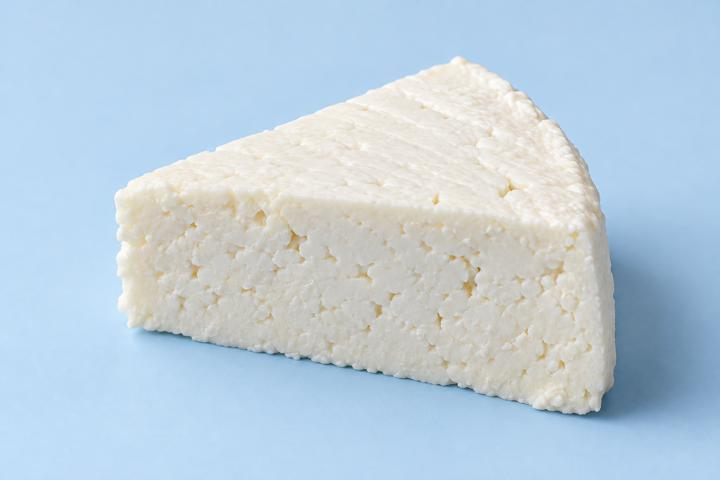

ECOAHORRO · ETIQUETA DIGITAL
Queso
costeño
Queso fresco · leche de vaca

Fecha de lote23 oct 2026
Vencimiento20 feb 2027
Lote de demostración: QC-001 · 300 g
Valor nutricional
por cada 100 gEnergía301 kcal
Grasas totales24,48 g
Grasas saturadas15,70 g
Carbohidratos2,54 g
Azúcares2,54 g
Proteínas17,61 g
Sal2,81 g
Ingredientes
Leche pasteurizada de vaca, sal, secuestrante E-509, coagulante microbiano y conservador E-202.
Fechas, lote y composición mostrados como referencia; pueden variar según la marca. Fuente nutricional